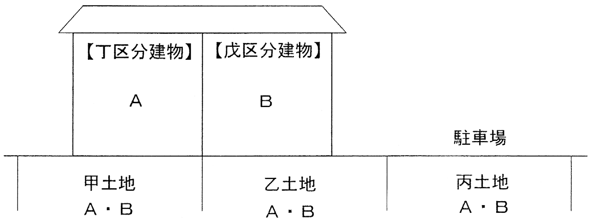

問題文・条件
甲土地及び乙土地の上に一棟の建物に属する丁区分建物及び戊区分建物が存在し、丙土地はA及びBの駐車場として使用されている。甲土地、乙土地及び丙土地の所有権の登記名義人はA及びBであり、Aは丁区分建物の、Bは戊区分建物の新築時の所有者（表題登記がない場合）又は表題部所有者（表題登記がある場合）である。なお、問題文に明記されている場合を除き、専有部分とその専有部分に係る敷地利用権とを分離して処分することができる旨を定めた規約（「分離処分可能規約」）はないものとする。
肢 ア
R4-18-ア
Aは、甲土地及び乙土地のAの共有持分権を敷地権として、表題登記がない丁区分建物について表題登記を申請することはできない。

〔図〕
解答：×
数人が共有する所有権も敷地利用権になり、その共有持分が敷地権になる。申請できる。
敷地利用権が数人で有する所有権である場合、区分所有者は専有部分と敷地利用権を分離して処分できず、その敷地利用権は敷地権になる。甲土地・乙土地のAの共有持分は、Aの丁区分建物の敷地権である。Aは、この共有持分を敷地権として丁区分建物の表題登記を申請することができる。
根拠区分所有法22条1項法44条1項9号
出典：法務省 令和4年度 土地家屋調査士試験を加工して作成
肢 イ
R4-18-イ
丙土地が規約により表題登記がある戊区分建物の敷地とされた場合には、Bは、丙土地が敷地となった日から1か月以内に、丙土地について有する登記された敷地利用権を敷地権として表示する戊区分建物の表題部の変更の登記を申請しなければならない。
〔図〕
解答：○
敷地権が生じたときは、1か月以内に表題部の変更の登記を申請する。
丙土地が規約敷地になれば、Bが丙土地について有する共有持分は戊区分建物の敷地権になり、敷地権は建物の表示に関する登記事項である。登記事項に変更があったときは、表題部所有者又は所有権の登記名義人が、変更の日から1か月以内に変更の登記を申請しなければならない。
根拠区分所有法5条1項法44条1項9号法51条1項
出典：法務省 令和4年度 土地家屋調査士試験を加工して作成
肢 ウ
R4-18-ウ
Aは、丙土地を丁区分建物の敷地とすることについてAのみが賛成した旨が記載された集会の議事録を申請書に添付することにより、丙土地のAの共有持分権を敷地権として、丁区分建物の表題登記を申請することができる。
〔図〕
解答：×
規約敷地とするには規約の設定が要る。一人だけが賛成した議事録では規約にならない。
丙土地を建物の敷地にするには、区分所有法5条1項の規約を設定しなければならない。規約の設定は区分所有者及び議決権の各4分の3以上の多数による集会の決議による。区分所有者はAとBの2人だから、Aだけの賛成では決議が成立しない。その議事録を添付しても、丙土地の持分を敷地権とする表題登記は申請できない。
根拠区分所有法5条1項区分所有法31条1項令別表12項
出典：法務省 令和4年度 土地家屋調査士試験を加工して作成
肢 エ
R4-18-エ
丁区分建物及び戊区分建物の表題部に甲土地及び乙土地に係る敷地権が登記されている場合には、Aは、丁区分建物についてのみ甲土地及び乙土地の敷地利用権との分離処分可能規約を設定したことを証する情報を提供して、丁区分建物についてのみ甲土地及び乙土地に係る敷地権の登記を抹消する表題部の変更の登記を申請することができる。
〔図〕
解答：○
分離処分可能規約を設定すれば、その専有部分について敷地権でなくなる。規約を証する情報を添えて、その区分建物だけ敷地権の登記を抹消できる。
敷地権とは、専有部分と分離して処分することができない敷地利用権である。規約で分離処分を可能にすれば、その専有部分についての敷地利用権は敷地権でなくなる。規約は一部の専有部分についてだけ設定することもできる。丁区分建物についてだけ規約を設定し、それを証する情報を提供して、丁区分建物についてのみ敷地権の登記を抹消する表題部の変更の登記を申請できる。
根拠法44条1項9号区分所有法22条1項昭58.11.10民三6400号
出典：法務省 令和4年度 土地家屋調査士試験を加工して作成
肢 オ
R4-18-オ
甲土地のAの共有持分権に丁区分建物の敷地権である旨の登記がされている場合において、当該敷地権である旨の登記がされた後の売買を原因とする当該共有持分権の移転の登記をしようとするときは、その前提として、当該共有持分権に係る敷地権の登記を抹消する丁区分建物の表題部の変更の登記をすることを要しない。
〔図〕
解答：×
敷地権である旨の登記がある土地には、敷地権の移転の登記はできない。先に敷地権の登記を抹消する必要がある。
敷地権である旨の登記をした土地には、敷地権の移転の登記をすることができない。ただし書は、敷地権の目的となった後に登記原因が生じたものを認めるが、分離処分禁止の場合は除いている。分離処分可能規約がない本問では、分離処分禁止の場合に当たる。土地の持分だけを売買で移転するには、その前提として敷地権の登記を抹消する表題部の変更の登記が必要である。
根拠法73条2項区分所有法22条1項
出典：法務省 令和4年度 土地家屋調査士試験を加工して作成